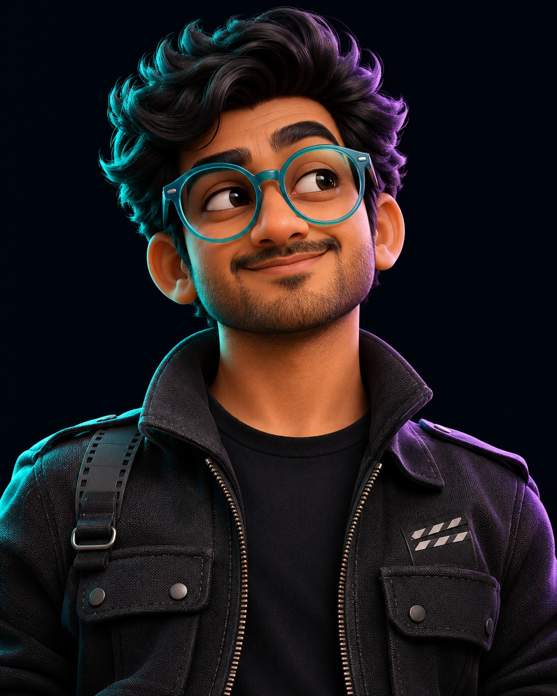
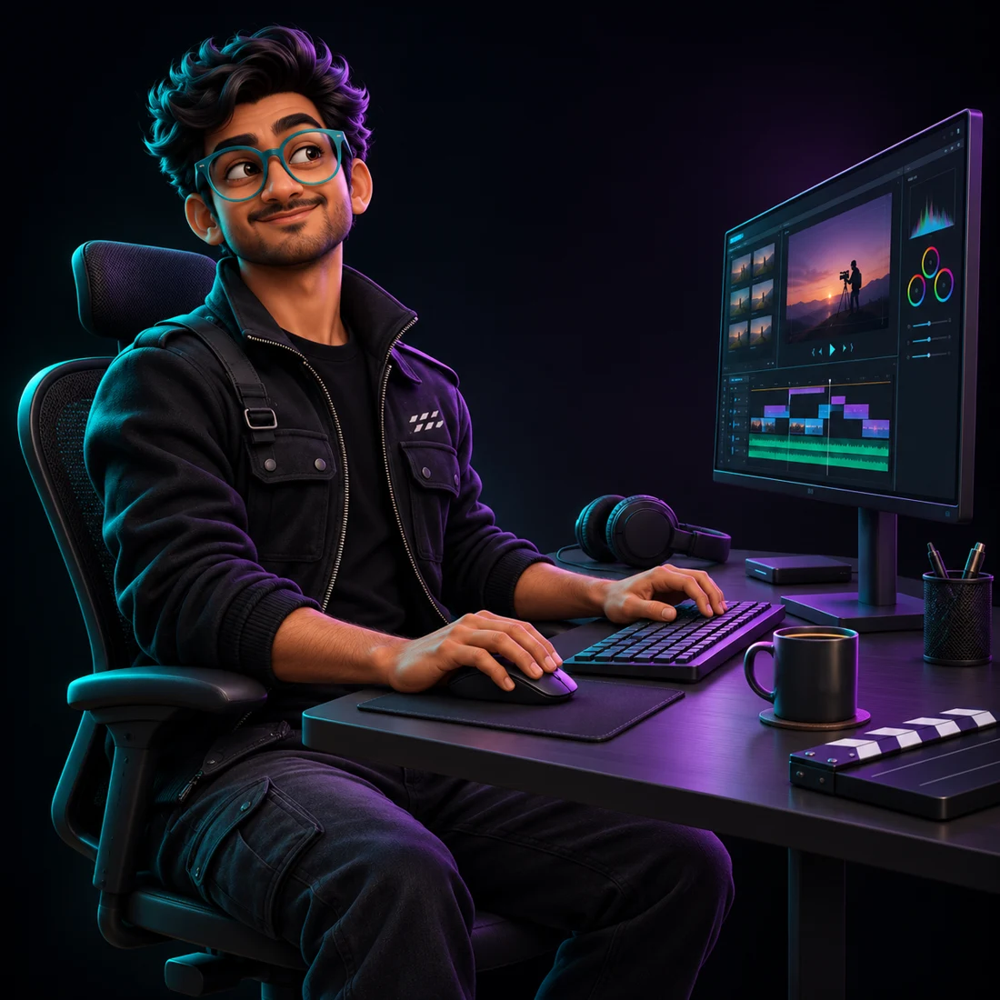

Ember
A slow reveal built around amber light, glass edges and the heft of the bottle.


I’m an AI Content Creator at Navodhan Educational Technologies Pvt Ltd, based in Greater Hyderabad. I turn concepts into realistic images and short films for Instagram and TikTok. Before moving into content full-time, I learned to coordinate with customers and solve day-to-day problems in my family’s business.
LinkedIn profileI develop the concept, iterate on scenes in Google Flow and Kling AI, and deliver short-form cuts for social.
I use Imagen 4 to build realistic imagery and a consistent visual identity across a recurring series.
I research trends and hashtags, plan the content calendar and use post-level analytics to adjust format and timing.
Navodhan Educational Technologies Pvt Ltd
Kerala, India
NovaX Hong Kong
Remote freelance · Hyderabad, Telangana, India
I produced realistic AI imagery and short videos for Instagram-first influencer and brand campaigns. I worked directly with clients, taking each piece from concept through revision while keeping the visual identity consistent across the series.
I used Google Flow, Imagen 4 and Kling AI v2, researched hashtags and trends for the content calendar, and tracked individual posts to refine the format and publishing time.
RS Traders Steel & Cement
Hyderabad, Telangana, India
I supported daily operations at SK Steel & Cement, helping customers compare steel and cement brands and coordinating with vendors to keep stock available. I maintained digital records and tracked orders. During this period I taught myself AI content generation.
Bachelor’s degree in Electronics
Apr 2019 – Apr 2023Intermediate, MPC (Mathematics, Physics and Chemistry)
Jun 2015 – Jun 2017SSC (Secondary School Certificate), General Studies
Apr 2002 – Apr 2015A slow reveal built around amber light, glass edges and the heft of the bottle.
A chrome frame, an electric blue set and one virtual model give the collection a distinct face.
Cut fruit and a saturated orange palette put flavour at the centre of a launch post.
Based in Hyderabad, Telangana. I’m open to freelance projects and full-time opportunities in AI content creation and digital content strategy.